1同一台 iPad，為什麼別人拍的比較好看
拿出 iPad，對著操場按一下——大家拍到的東西其實差不多：天空、樹、跑道、遊戲器材。可是把照片排在一起看，就是有幾張特別耐看，其他的只能算「有拍到」。
很多人第一個念頭是「他的 iPad 比較好」。可是學校的 iPad 是同一批進來的，連鏡頭都一樣。真正的差別在一件事：他按下去之前，先想過畫面要長什麼樣子。
這件事有一個名字，叫構圖。它不是什麼高深的技術，說穿了就是三個問題：
- 主角是誰？——這張照片你想給別人看的是「那棵樹」還是「整個操場」？一張照片只能有一個主角，兩個以上就會變成「什麼都拍到，什麼都不清楚」。
- 主角要放在畫面的哪裡？——正中央？偏左？偏右？位置不一樣，感覺就完全不一樣。今天要學的六種構圖，講的就是這一題。
- 其他東西要不要進來？——後面那台腳踏車、旁邊那個垃圾桶，要不要讓它出現在照片裡？大部分時候答案是「往旁邊走兩步，讓它出去」。
你想拍操場邊那棵大樹，可是後面剛好有一台腳踏車很礙眼。最快的解決方法是什麼？
想想看：你可以動的東西有哪些？
2動手：先把兩個幫手叫出來
iPad 裡面藏了兩個專門幫人構圖的小工具，可是出廠的時候是關著的，所以大部分人一輩子都沒看過。它們是：
- 格線——在畫面上畫出井字形的九宮格，等一下講的「三分法」全靠它。
- 水平儀——你把 iPad 拿歪的時候，畫面中間會跑出一條線提醒你。
兩個都只要打開一次，以後每次開相機都在。跟著做四步：
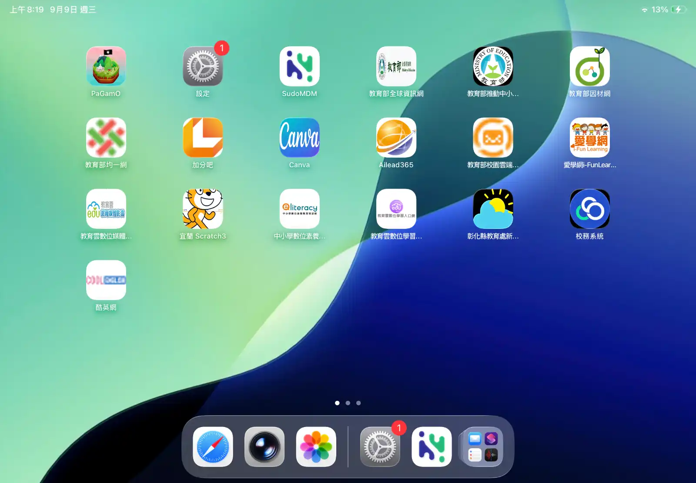
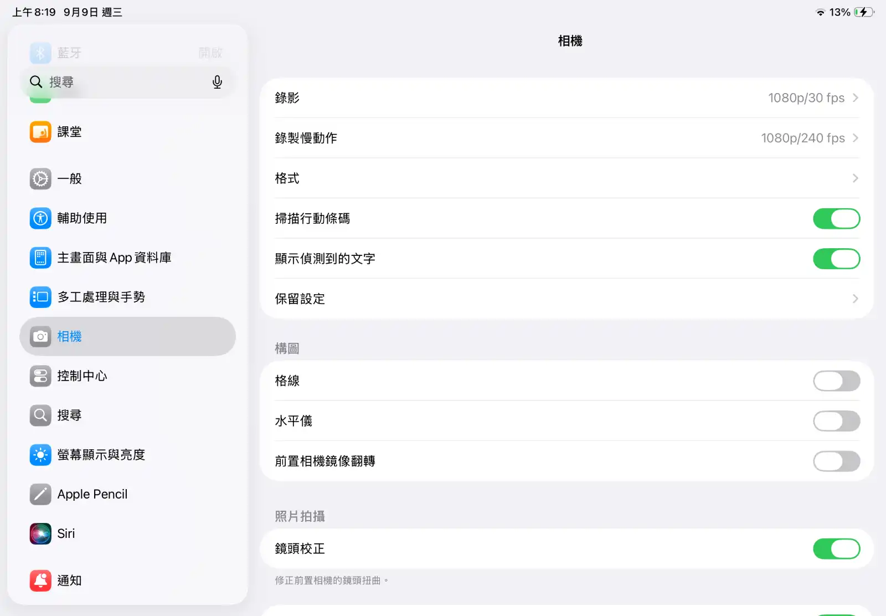
「推開」是什麼意思、推開之後長怎樣？下面這兩顆是真的可以點的，先在這裡推一次，等一下在 iPad 上手就知道要做什麼了：
iPad 設定裡的「構圖」區塊長這樣。用手指點一下右邊那顆開關 👇
- 格線
- 水平儀
⚠️ 找不到「相機」？
- 左邊那排滑不動——手指要放在左邊那一排上面滑，不是右邊。左右是兩個各自獨立的清單。
- 滑過頭了——「相機」大概在「多工處理與手勢」的下面、「控制中心」的上面。滑過頭就往回滑一點。
- 真的找不到——用左上角的搜尋格子，直接打「相機」兩個字。
- 推了開關卻推不動——學校的 iPad 有些設定被鎖住了。舉手叫老師，這一台不用勉強。
第四步：回到相機 App，看看畫面有什麼不一樣。左邊是打開之前、右邊是打開之後：
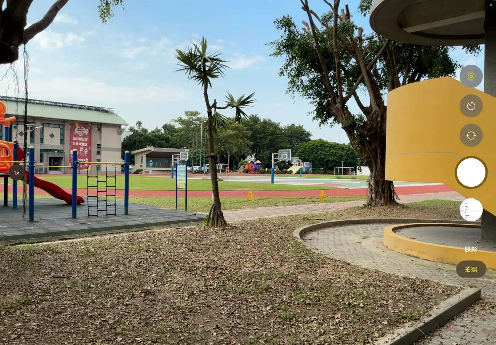
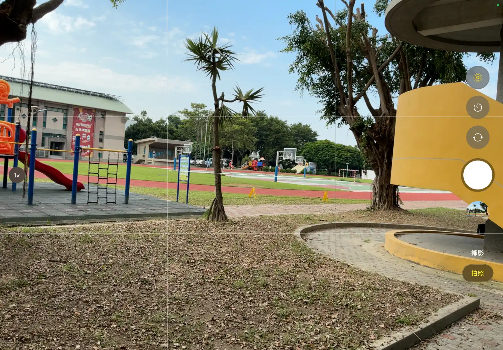
把打開之後那張放大來看，可以看到兩個幫手各自在做什麼：
3順手做一件事：把「原況照片」關掉
相機畫面的右上角有一顆按鈕，看起來像好幾個圈圈套在一起。它叫原況照片（英文是 Live Photo）。
它在做什麼呢？你按下快門的時候，它不只拍下那一張，還會偷偷把前後各 1.5 秒錄下來。所以事後長按那張照片，畫面會動起來——旗子在飄、頭髮在晃。
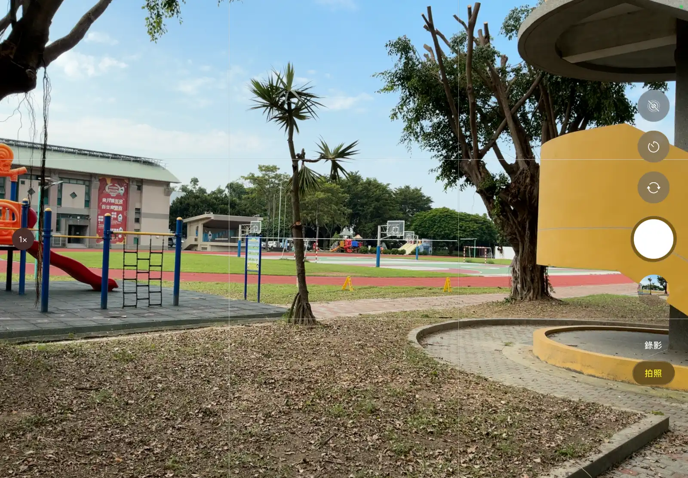
會動的照片很好玩，那為什麼上課要把它關掉？因為一張原況照片，佔的空間差不多是普通照片的兩倍——你等於每拍一張，就多存了一小段影片。
學校的 iPad 是全班輪流用的，空間就那麼多。一個班拍個兩百張，空間馬上見底，下一節課的同學就拍不了了。而且今天要練的是構圖，會不會動一點關係都沒有。
💡 那什麼時候才該打開？
不是叫你以後都不要用。想留住「那一瞬間的動作」的時候再打開——弟弟吹蠟燭、貓跳起來、運動會衝過終點線。這種時候多花一點空間很值得。
其他時候（拍作品、拍黑板、拍風景、拍靜物）都不需要，關掉就對了。習慣是：平常關著，需要的時候才打開，用完再關回去。
下面哪一種情況，打開原況照片是划算的？
問自己一句：這張照片「會動」有比較好嗎？
4構圖，就是「畫面裡的座位表」
幫手都準備好了，現在講今天真正的主題。
「構圖」聽起來很專業，其實你每天都在做。想想看：全班拍畢業照的時候，老師會排誰站中間、誰站兩邊、誰蹲前面——那就是構圖。差別只在於，拍照的時候你排的不是人，是畫面裡的每一樣東西。
攝影的人整理出一些「排起來特別好看」的固定位置，就成了構圖形式（也有人叫構圖法）。它們不是規定，是前人試了很多次之後留下來的捷徑——你照著擺，八成不會難看。
是「按下去之前先排好」。 手指按下快門只要 0.2 秒，排位置卻可以花 3 秒。
那 3 秒，就是好照片和普通照片的全部差別。
下面六種是最常用的。每一張範例照片下面都有一顆按鈕——先自己看一遍，猜猜看主角在哪、線會畫在哪裡，再按下去對答案。先看線再看照片，等於直接看答案，練不到眼睛。
5六種構圖形式，一種一種試
這一段最長，不用一次看完。每一種構圖都有兩張照片：一張是我們學校拍的，一張是世界各地的攝影師拍的。兩張擺在一起你會發現：同一招，在操場和在海邊是一樣好用的。
① 中央點構圖：把主角放在正中央
最簡單、也最直接的一種：主角就放畫面正中央。無論如何都想讓人一眼看到它的時候用這一招，衝擊力最強。
它只有一個訣竅：背景一定要單純。主角在正中央，旁邊如果很雜，觀眾的眼睛就會被拉走，中央的力量整個消失。
.webp)
「背景要單純」到什麼程度？看這張就懂了——背景已經糊到看不出是什麼東西，眼睛除了中間那顆絨球，無處可去：
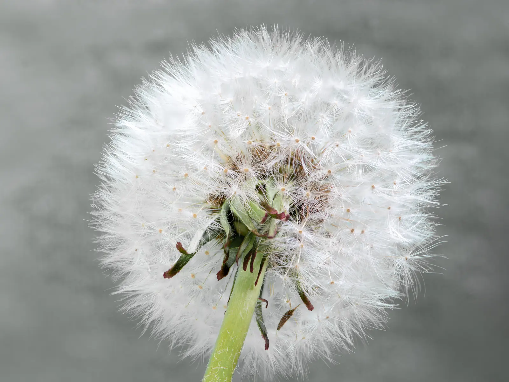
Benjamin White 攝／CC BY-SA 4.0／Wikimedia Commons
還有一個常常被忘記的重點：主角要夠大。很多人拍出來不好看，不是位置錯了，是站太遠，主角只佔畫面的一小塊。
.webp)
② 三分法構圖：把主角放在交會點上
這是最常用的一種，也是我們剛剛特地把格線打開的原因。作法只有一句話：把主角放在四個交會點的其中一個上面。
為什麼不是放中央就好？因為主角偏一點的時候，另外一邊會空出來——那塊空的地方會讓照片有呼吸的感覺，看起來比較舒服、比較有空間感。中央點構圖是「用力」，三分法是「好看」。
先自己判斷一次：這張照片的主角是那棵大榕樹的樹幹。它落在哪一個交會點上？點點看。
.webp)
再看一張只有一個主角、其他什麼都沒有的例子。一整片藍天，一顆熱氣球——它站的位置就是全部：
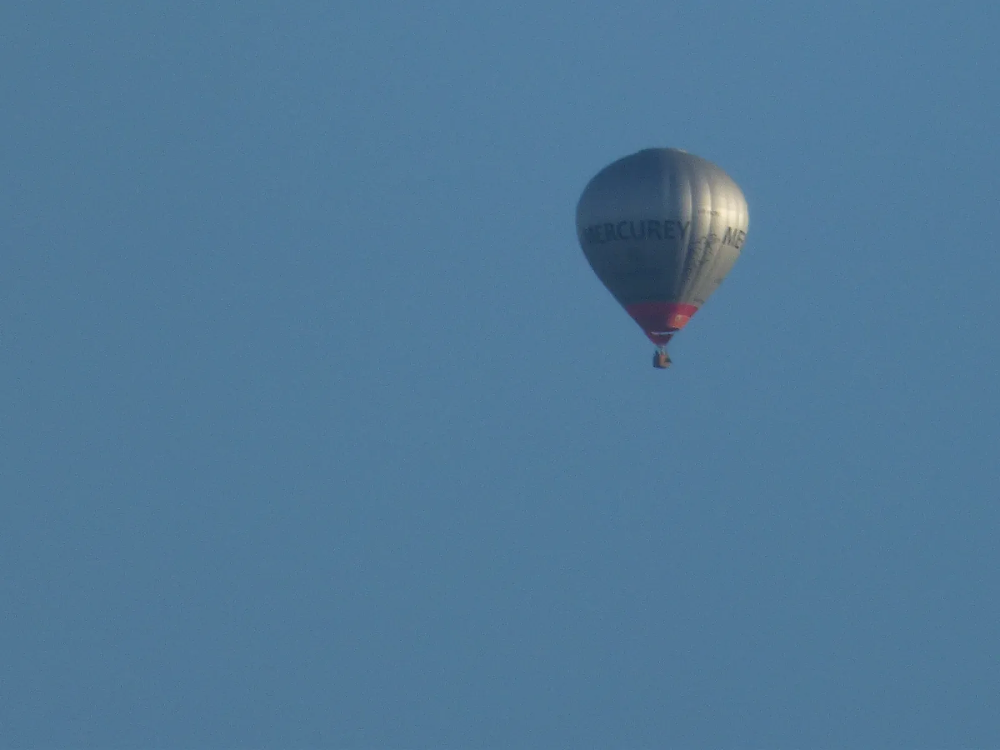
Elliott Brown 攝／CC BY-SA 2.0／Wikimedia Commons
不信的話，比比看。同一顆氣球、同一片天空，只是把它擺在不同的位置：
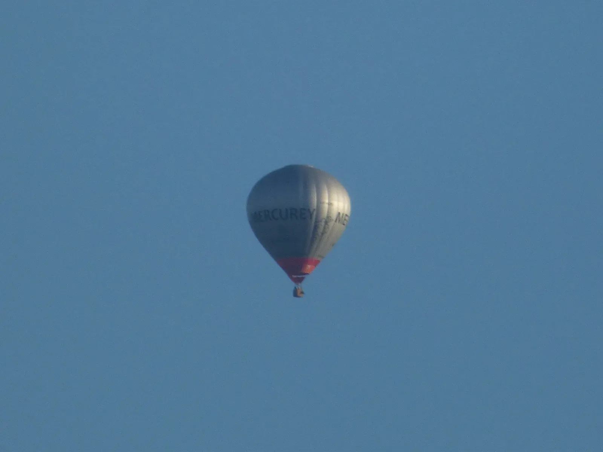
差別只有「站的位置」，可是右邊那張明顯比較耐看。這就是為什麼要打開格線——它把那四個位置直接畫在你的畫面上，不用再用猜的。
💡 拍人的時候，交會點要對準「眼睛」
拍人、拍動物的時候，別人第一眼看的一定是眼睛。所以三分法要對的不是頭、不是身體，是把眼睛放在上面兩個交會點的其中一個。
還有一個小規矩：人面向哪一邊，那一邊就要多留空間。臉朝右，人就站左邊；臉朝左，人就站右邊。反過來會有一種「快要撞到牆」的怪感覺。
③ 垂直水平構圖：不要拍歪
這一種嚴格說不是「怎麼擺主角」，而是一條底線：畫面裡如果有明顯的直線和橫線（牆、地平線、桌邊、走廊），它們就必須是直的和橫的。
歪 2 度、3 度，你當下不一定看得出來，但照片會有一種說不上來的「怪怪的」。而且愈是有很多線條的場面（教室、走廊、街道），歪掉就愈明顯。
.webp)
線條愈多的場面，愈吃這一招。下面這一整面貨櫃牆，只要歪一點點，全部的線就會一起歪給你看：
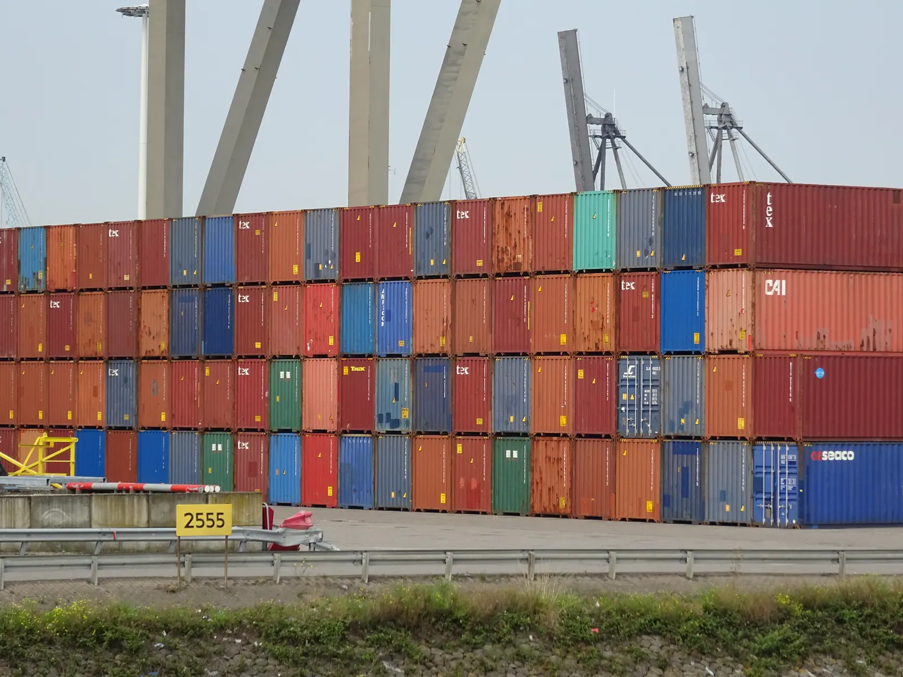
AgainErick 攝／CC BY-SA 4.0／Wikimedia Commons
💡 「斜的」不一定是拍歪
仔細看上面那面牆：上緣是平的，可是牆的底部好像有點斜。這不是拍歪——是近的地方看起來大、遠的地方看起來小，所以往遠方延伸的線會微微收起來。
怎麼分辨？看離你最近、最正對著你的那條線（這裡是牆的上緣）。它平了，就是沒歪。往遠處延伸的線本來就會斜，那是正常的，不用去救它。
換你把一張拍歪的照片救回來。拉下面的滑桿，把中間那條白線對齊照片裡的地面和屋簷，誤差在 1 度以內就算過關：
.webp)
感覺到了嗎？歪 6 度看起來就已經很誇張，可是歪 1 度你幾乎看不出來——這就是為什麼要開水平儀：它替你的眼睛做那 1 度的判斷。
④ 斜線構圖：用斜的線製造動感
前面說「不要歪」，這一種卻是故意用斜線——差別在於：歪掉的是整個畫面，斜線構圖歪的是畫面裡的東西。地平線還是平的，只是有一條明顯的斜線穿過去。
斜線的效果是動感和遼闊感。橫線和直線讓人覺得穩、安靜；斜線讓人覺得有東西正在往那個方向去。
用這一招只有一個要求：那條斜線要夠清楚。若隱若現的斜線沒有用，要一眼就看得到。像這樣：
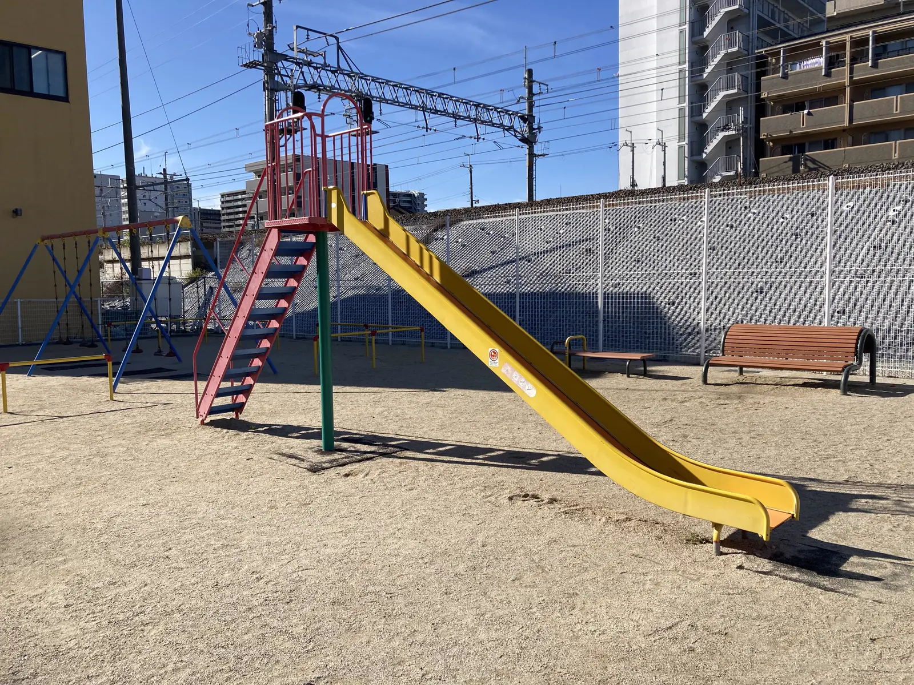
照片來源：Wikimedia Commons，Kusayoko 攝，CC0 公眾領域（可自由使用）。
同一招在校園裡還有別的用法。蹲下來、鏡頭朝上，普通的一棵樹也會變成一整片斜線：
.webp)
🔍 校園裡現成的斜線，去找找看
- 溜滑梯——就是上面那張的題材，操場就有。從側面拍，滑道才會是一條長長的斜線；從正面拍就變成一團了。
- 樓梯的扶手——站在樓梯下面往上拍，扶手就是一條漂亮的斜線。
- 走廊——站在走廊的一頭往另一頭拍，兩邊的柱子和天花板會往中間收，是最強的斜線。
- 操場跑道的白線——蹲低一點，從跑道的邊邊往前拍。
- 斜坡、無障礙坡道、屋簷——本來就是斜的，直接用。
⑤ 對稱構圖：左右一樣，或上下一樣
畫面的左右（或上下）長得幾乎一模一樣，就叫對稱構圖。它給人的感覺是穩、正式、有秩序，很適合拍建築物、走廊、大門、水面倒影。
訣竅有兩個：① 站在正中間——偏一點點對稱就破功了；② 多餘的東西不要入鏡——對稱的畫面裡只要多一台腳踏車，整個秩序就毀了。
對稱不是只有左右。上下也可以對稱——最好認的就是水面倒影：
Ethan Conley 攝／CC0 公眾領域／Wikimedia Commons
⑥ 群集構圖：讓一大堆同樣的東西塞滿畫面
當眼前有很多很多長得差不多的東西——一整片葉子、一整排課桌椅、一整面磁磚、操場上一堆球——就可以用這一招：不挑主角，讓它們塞滿整個畫面。
重點是不要讓別的東西混進來。一整片綠葉裡如果露出一角天空、一根電線桿，「一大片」的感覺立刻就散掉了。
.webp)
海邊的鵝卵石也是同一招。注意看：每一顆的大小、顏色都不一樣，可是「都是石頭」這件事把它們綁在一起：
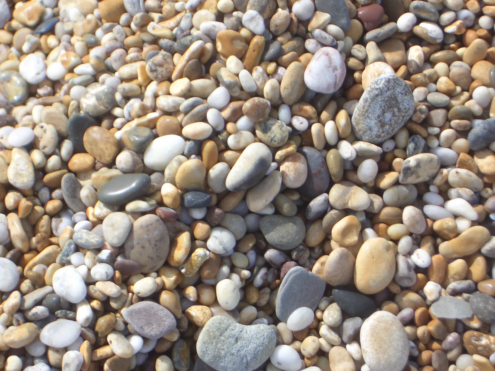
David Park 攝／CC BY-SA 3.0／Wikimedia Commons
六種一次看完
不用背。拍的時候想不起來就回來翻這一張：
你要幫學校的公布欄拍一張「圖書館入口」的照片，希望看起來正式、穩重。最適合哪一種構圖？
「正式、穩重」對應到哪一種感覺？
6校園構圖任務卡
構圖沒辦法用看的學會，一定要自己走出去按幾次快門。下面六個任務，每一個任務只准拍三張——限制張數是故意的，這樣你才會在按下去之前先想。
拍完之後把六張排在一起看，你會自己發現哪一張最好。
- 先把設定做完——格線、水平儀打開，原況照片關掉。做完打開相機確認：畫面上要看得到九宮格，右上角的圈圈要是暗的
- 【中央點】找一個小東西（一片落葉、一顆石頭、水龍頭），蹲下來靠很近，把它放在畫面正中央拍。檢查：它有沒有佔到畫面的一半以上？
- 【三分法】拍一棵樹或一個同學，把主角放在某一個交會點上，另一邊留空。拍人的話，交會點要對準眼睛
- 【垂直水平】拍教室的黑板或走廊的牆，橫線要平、直線要直。拍完把照片放大檢查邊邊，歪了就重拍一次
- 【斜線】去溜滑梯、樓梯或走廊，找一條清楚的斜線拍下來。溜滑梯記得從側面拍。試試看站直拍一張、蹲下來拍一張，比比看哪張的斜線比較有力
- 【對稱】找一個左右對稱的地方（大門、走廊、司令台），站在正中間拍。注意不要讓多餘的東西入鏡
- 【群集】找一大片長得差不多的東西（樹叢、磁磚、課桌椅、鞋櫃），讓它們塞滿整個畫面，不要露出天空或地面
- 最後一步：挑一張最滿意的，跟旁邊的同學交換看，請他猜猜看你用的是哪一種構圖。他猜得出來，才算真的拍到位
拍完覺得「還是怪怪的」？照這三條檢查一次點我看答案
照片不好看，九成是這三件事的其中一件，照順序檢查最快：
- 主角太小——這是最常見的。你站太遠了，主角只佔畫面的一小塊，別人根本不知道要看哪裡。解法：往前走三步再拍一次，不要用手指放大。
- 背景太亂——主角沒問題，但後面有腳踏車、垃圾桶、走來走去的人。解法：往左右移動幾步，或蹲低、站高一點，讓背景換成天空、牆面、草地這種單純的東西。
- 歪了——邊邊的線不平。解法：看水平儀，把地面或牆邊對齊格線再按。
三條都檢查過還是覺得怪，那多半是主角本身就不明確——回到第 1 段的三個問題，重新問自己一次：這張照片，我到底想給別人看什麼？
7卡住了？先看這裡
⚠️ 常見狀況
- 格線打開了，可是相機裡看不到——先把相機 App 完全關掉再重開（從畫面最下面往上滑，把相機那張卡片往上丟掉），再開一次就有了。
- 水平儀一直沒出現——水平儀只有在你把 iPad 拿得接近水平或接近垂直的時候才會跳出來，斜斜地拿它會躲起來。這是正常的。
- 右上角找不到原況照片那顆按鈕——它在相機畫面的右上角，長得像好幾個圈圈套在一起。如果 iPad 是橫著拿，它可能會轉到另一個角落，四個角都找找看。
- 照片一直糊糊的——先點一下畫面上的主角，讓相機對焦在它身上（畫面會閃一下黃框），再按快門。另外，擦一下鏡頭——學校的 iPad 上面常常都是指紋。
- 逆光，主角變成黑黑的一團——太陽在主角後面就會這樣。解法是換一邊站，讓太陽在你背後。或是點一下主角之後，把旁邊出現的小太陽往上滑，畫面就會變亮。
- iPad 空間滿了，拍不下去——先確認原況照片是不是關的，再去把「最近刪除」相簿清空（照片刪掉之後還會躺在那裡 30 天）。清之前先問老師。
- 不知道要拍什麼——不要想「什麼東西很美」，改想「什麼東西可以放進九宮格的交會點」。任務卡上的六個任務照著做就好，題目已經幫你出好了。
📸 拍人之前，一定要先問一句
今天很多任務會拍到同學。拍別人之前一定要先問「我可以拍你嗎？」，對方說不要就不要拍——這不是客氣，這是規矩。
還有兩件事：不要拍別人不好看、出糗的樣子；拍到的照片不可以傳到網路上或群組裡，除非照片裡的每一個人都同意。相片留在 iPad 裡給老師看就好。